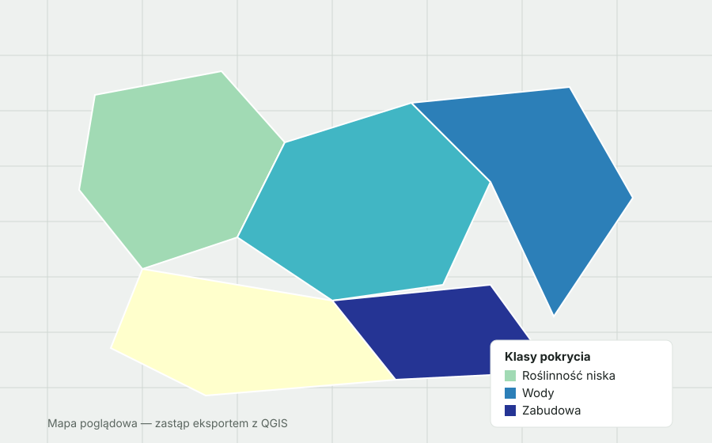

Przykład projektu opartego na mapie statycznej (obraz PNG/JPG wyeksportowany z QGIS). Podmień obrazek poniżej na własny eksport mapy.

Cel projektu
Opisz, jaki był cel analizy — np. określenie zmian pokrycia terenu w czasie, identyfikacja obszarów zurbanizowanych czy ocena zalesienia. Wskaż źródło danych (Sentinel-2, Landsat, Corine Land Cover) i okres, którego dotyczą.
Proces
Krótko opisz przebieg pracy: pozyskanie danych rastrowych, klasyfikację nadzorowaną lub nienadzorowaną, walidację wyników i przygotowanie kompozycji mapowej z legendą, skalą i strzałką północy w kompozytorze wydruków QGIS.
Mapy statyczne świetnie sprawdzają się w publikacjach i raportach — masz pełną kontrolę nad kompozycją, typografią i eksportem w wysokiej rozdzielczości.
Wnioski
Podsumuj najważniejsze rezultaty analizy oraz to, co dała ta praca. Możesz dodać link do pobrania mapy w PDF lub do repozytorium z danymi i skryptami.